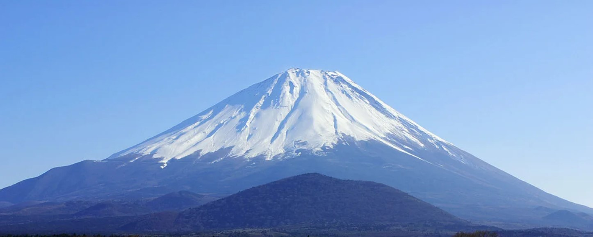
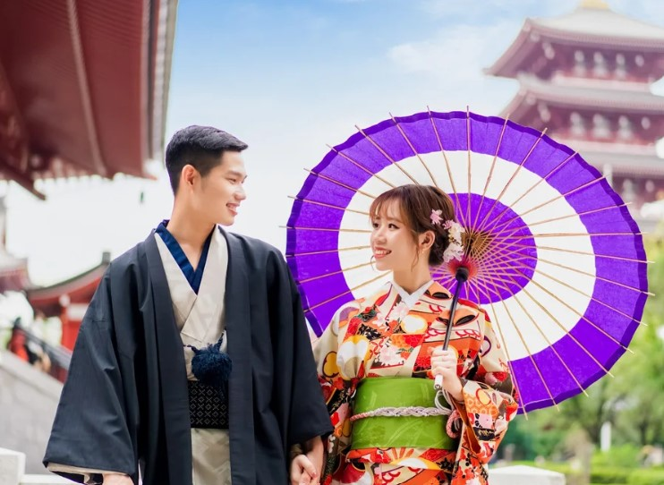

How to Get to Japan from the Philippines
To get to Japan from the Philippines, you can opt for direct flights that depart from major airports like NinoyAquino International Airport (NAIA) in Manila or Mactan-Cebu International Airport. Airlines such as Philippine Airlines, Japan Airlines, and Cebu Pacific offer direct flights to major cities in Japan, including Tokyo, Osaka, and Nagoya. The average flight duration is around 4 to 5 hours. Make sure to check travel requirements like visas and health protocols before booking your flight.
Other Places to Visit in Japan
Japan is full of amazing destinations to explore. Here are some must-visit places:
- Kyoto - Known for its traditional temples and beautiful gardens.
- Tokyo - A bustling metropolis offering a mix of modernity and history.
- Hokkaido - Perfect for nature lovers, famous for its hot springs and ski resorts.
- Fukuoka - A vibrant city known for its food scene and cultural sites.
- Nara - Famous for its ancient temples and friendly deer that roam freely in the parks.
Himeji Castle

Himeji Castle is a UNESCO World Heritage Site and is considered one of Japan's most beautiful castles. It is known for its stunning white exterior and intricate architecture. The castle has a rich history, having survived numerous wars and natural disasters. Visitors can explore the castle grounds, climb to the top for panoramic views, and learn about its fascinating history through informative displays.
Why I Want to Go to Japan
 I have always been fascinated by Japan's unique blend of ancient traditions and modern technology. The rich culture, delicious cuisine, and stunning landscapes make it a dream destination for me. I want to experience the cherry blossoms in spring, visit historic temples, and immerse myself in the vibrant atmosphere of cities like Tokyo and Kyoto. Additionally, I am eager to learn about Japanese customs and traditions, making my trip an unforgettable cultural experience.